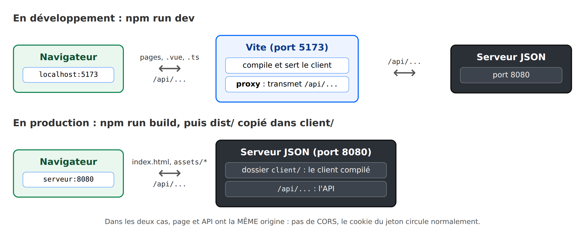

11. Déploiement
En développement, deux serveurs travaillent ensemble : [Vite] (le client) et le serveur JSON (l'API). En production, il n'y en a plus qu'un :

1. Construire le client. Dans le dossier [rdvmedecins-vuejs] :
La console affiche (extrait) :
Le dossier [dist/] contient toute l'application : une page [index.html], une feuille de style, et des fichiers [JavaScript] optimisés (le code de [Vue.js], du routeur, de [Pinia]... et le nôtre). Les pages chargées à la demande ([() => import(...)]) ont chacune leur fichier. Le nom de chaque fichier contient une empreinte de son contenu ([index-BkCBbbGt.js]) : une nouvelle version aura un autre nom, et un navigateur ne pourra jamais garder en cache une version périmée.
On peut vérifier cette version avec [npm run preview] (http://localhost:4173).
2. Le déposer dans le serveur. On copie le CONTENU du dossier [dist/] dans un dossier [client/] à la racine du serveur JSON ([rdvmedecins-nestjs-json/client/index.html], [rdvmedecins-nestjs-json/client/assets/...]), puis on relance le serveur. Il affiche :
L'application complète est alors à l'adresse http://localhost:8080. Le serveur sert les fichiers du client, et renvoie [index.html] pour toute autre adresse hors de [/api] : recharger la page [/agenda] fonctionne (c'est le routeur du client qui l'affiche). Pour le lecteur curieux, c'est le fichier [src/web/client-spa.ts] du serveur qui fait ce travail.
3. En production réelle, on n'oubliera pas le fichier [.env] du serveur :
- un [JWT_SECRET] long et aléatoire ;
- [CAPTCHA_TEST] vide ;
- [COOKIE_SECURE=true] si le site est servi en HTTPS (il doit l'être : les mots de passe circulent) ;
- [TRUST_PROXY=true] si le serveur est placé derrière un proxy ([nginx]...), pour que la limitation des tentatives voie l'adresse IP réelle des clients.
On lance alors le serveur compilé : [npm run build], puis [npm run start:prod].